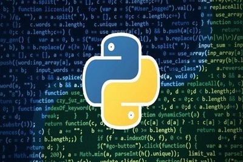

Python es la navaja suiza de los programadores. Se trata de un veterano lenguaje de programación presente en multitud de aplicaciones y sistemas operativos. Podemos encontrarlo corriendo en servidores, en aplicaciones iOS, Android, Linux, Windows o Mac. Esto es debido a que cuenta con una curva de aprendizaje moderada ya que su filosofía hace hincapié en ofrecer una sintaxis de código legible. Es un lenguaje de programación versátil multiplataforma y multiparadigma que se destaca por su código legible y limpio. Una de las razones de su éxito es que cuenta con una licencia de código abierto que permite su utilización en cualquier escenario. Esto hace que sea uno de los lenguajes de iniciación de muchos programadores siendo impartido en escuelas y universidades de todo el mundo. Sumado a esto cuenta con grandes compañías que hacen de este un uso intensivo. Tal es el caso de Google, Facebook o Youtube, ya que permite, entre otras de sus características la automatización de procesos y ejecución de tareas en tanto en entorno cliente como servidor.
Python crece gracias a su comunidad activa a pesar de no contar con una documentación técnica completa para dar detalles acerca de ciertos patrones o librerías. Por otro lado, su biblioteca completamente funcional te ayuda a desarrollar código para inteligencia artificial e incluso la ciencia de datos, por lo que resulta bueno para su uso en la web. Por otra puedes seleccionar entre los mejores editores de Python, aquel que más se adapta a tu encesidad.
Python tiene muy buen soporte para el desarrollo web con su marcos como Django, Flask y otros. Se puede utilizar para crear aplicaciones web del lado del servidor y se puede integrar con cualquier interfaz. Generalmente, los desarrolladores usan JavaScript en frontend y Python para respaldar las operaciones del lado del servidor. Python no se usa directamente en los navegadores.
No se preocupe, Python lo tiene cubierto. Hay un montón de cosas que puede automatizar con tan solo 4-5 líneas de código. Desde configurar trabajos cron y recordatorios hasta descargar sus videos favoritos de YouTube, puede hacerlo todo con un par de líneas en Python.
Python admite el desarrollo de juegos. Sus Pygame biblioteca es muy útil. Es compatible con proyectos de arte, música, sonido, video y multimedia que se pueden construir con él. Incluso puedes crear juegos multiplataforma usando Kivy, que se ejecuta en Windows, Mac, Linux, Android e iOS.
Ve muchos datos todos los días en varios sitios. Piense en lo genial que sería si pudiera acceder a esos datos fácilmente; eso es lo que web scraping es, y Python lo hace aún más fácil con su increíble soporte y bibliotecas. Los datos en la web no están estructurados y Python proporciona una manera fácil de analizar y consumir estos datos e incluso realizar más análisis y operaciones.
Python es muy adecuado para la manipulación, el análisis y la implementación de algoritmos complejos de datos. El análisis y la visualización de datos suelen ser funciones simples o unas pocas líneas de código con bibliotecas de Python como NumPy, scipy, scikit-learn, etc.
A pesar de los 30 años que ya cuenta Python es un lenguaje maduro pero que se encuentra en un continuo
proceso de
evolución. Gracias a su comunidad de desarrolladores cuenta con una amplia documentación y como decíamos
ha
pasado por numerosas épocas y versiones diferentes que prueban su solvencia.
Python es un lenguaje de propósito general con un uso muy extendido. Esto hace que aunque algunos
lenguajes
tienen mejor posición, como es el caso de R en tecnologías de Data Science y Machine Learning, Python
permite
abarcas proyectos de una manera mucho más rápida y eficiente por lo que si eres desarrollador, ingeniero
o
científico de datos no deberías perder más tiempo y comenzar especializarte en Python o al menos conocer
sus
bondades.